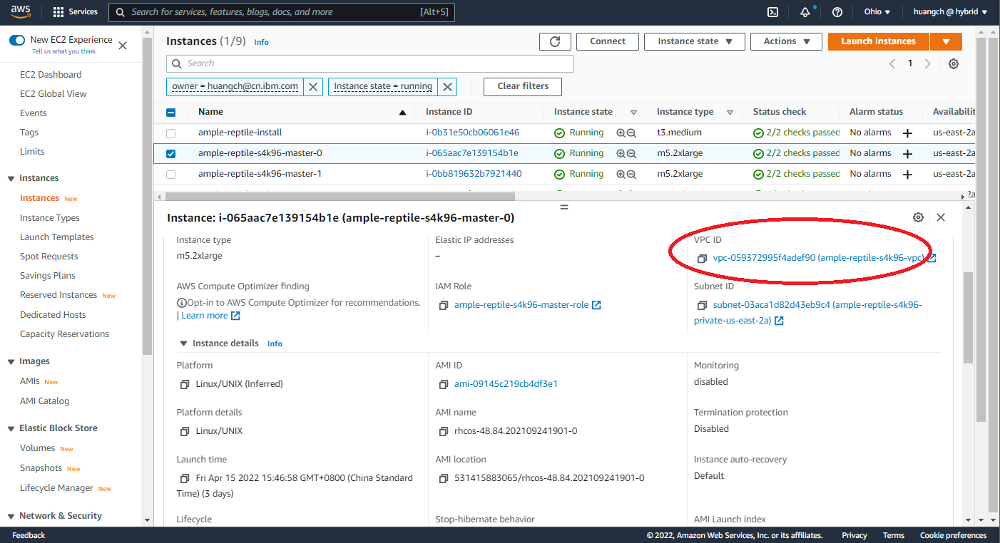
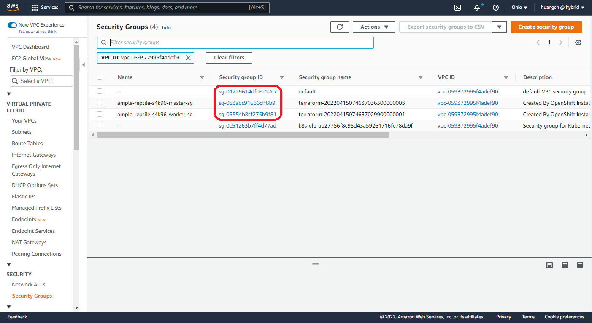
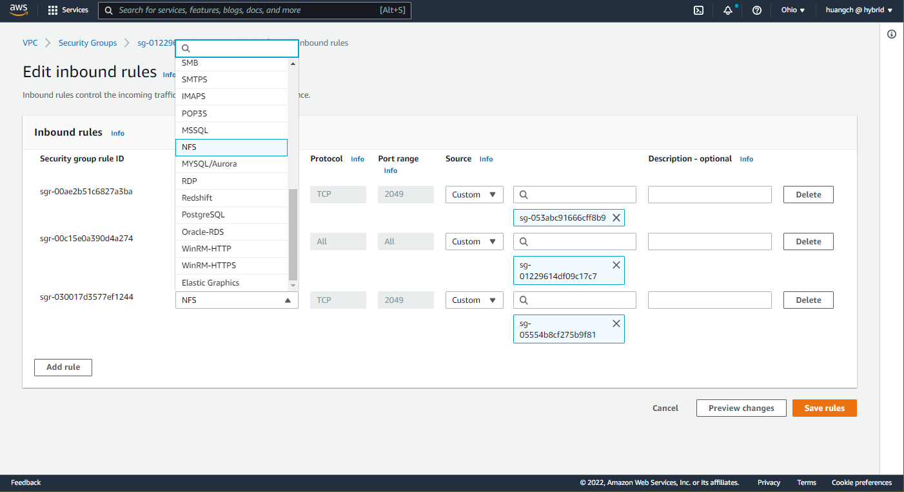
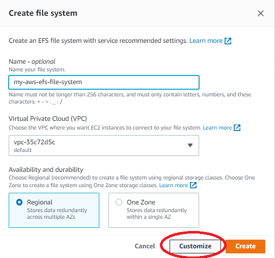
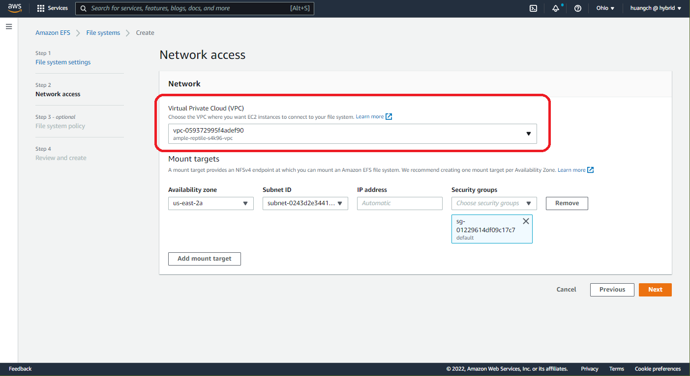

AWS EFS Storage Configuration Example¶
Prerequisite¶
- Please refer to AWS EFS guide for details.
- EFS storage configuration will need some cluster configuration data as following:
- cluster node VPC ID 
- VPC security group IDs for master node and worker node as well as the default security group 
Update default security group to enable EFS access¶
- edit cluster default security group inbound rules
- Add NFS rule for master node security group
- Add NFS rule for worker node security group 
Creating EFS Storage¶
- From AWS UI console goto Services->EFS
- Create file system
- select Customize 
- from Virtual Private Cloud (VPC) panel select the VPC associated with the cluster master node. 
- use default settings for other options
deploying EFS provisioner in the AWS cluster¶
- Login AWS cluster
- Create script efs-helm.sh using below code:
FSID=<EFS File system ID> # Get from Amazon EFS File systems list REGION=<EFS Region> # for example, use `us-east-2` for region us-east-2a/b/c helm install efs-provisioner \ --namespace default \ --set efsProvisioner.efsFileSystemId=${FSID} \ --set efsProvisioner.awsRegion=${REGION} \ efs-provisioner-0.13.2.tgz - Run efs-helm.sh script to deploy efs provisioner
- Update efs storage class as default storage
- remove the current default storage class from gp2
- edit sc
aws-efsadd the following settings in yaml to set it as the default storage class.annotations: storageclass.kubernetes.io/is-default-class: "true"